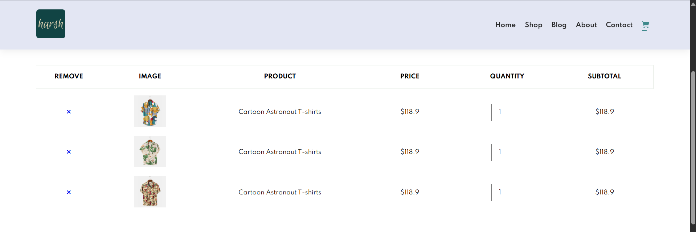

key features
CORE COMPONENTS & LOGIC
01
DYNAMIC CART
Real-time Updates
Refining the DOM so prices and quantities sync instantly without a refresh.
02
PRODUCT GRID
Visual Hierarchy
Designed for "scannability" — clean borders, ample white space, and clear CTAs.
03
ADAPTIVE LAYOUT
Mobile-First
A fluid architecture that prioritizes thumb-friendly targets and legible type on any screen.
04
CHECKOUT LOGIC
Simulated Flow
A "Buy Now" logic that guides users through a frictionless confirmation path.
